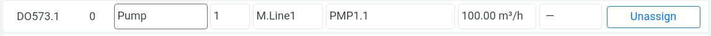
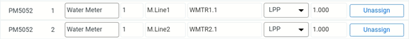
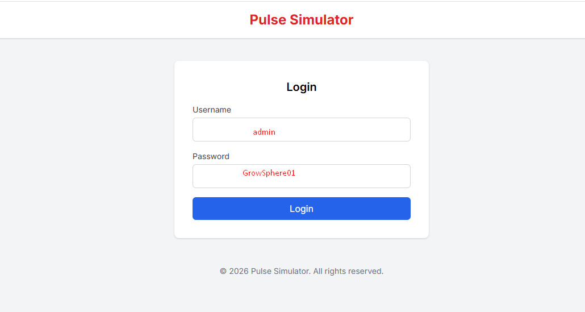
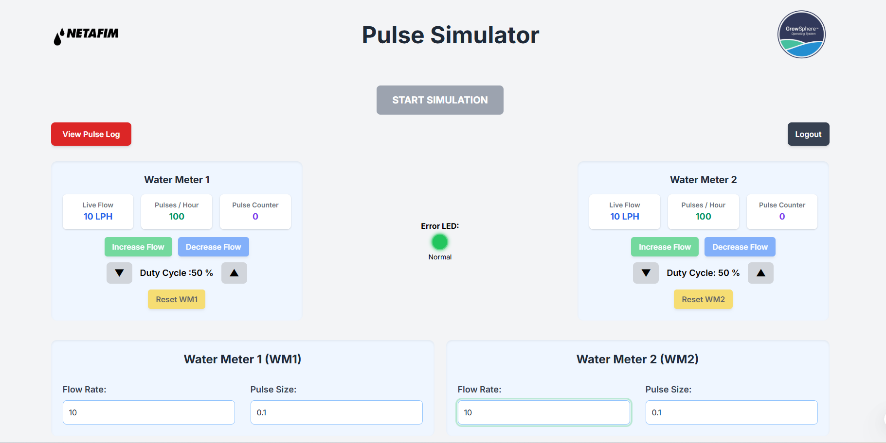

Pulse Simulator - User Guide
1. Prerequisites
Hardware Setup:
- Pulse Simulator Device
- 24V AC Relay
- Laptop / Mobile Device
- GS Max Controller
Configuration Requirements on Controller:
- Pump must be defined in GS Max Controller. This will operate Relay.

- Controller DI must be configured for pulse input.

This relay provides trigger input to RPI to start simulation.
2. Connection Diagram & Wiring
Power Supply Connections
- Orange Wire (+V) → DI (+) of PM5052
- White-Orange Wire (0V) → AI561 (-)
Pulse Output Connections
- Blue Wire → Pulse 1 Output → Connect to DI (e.g., IO0, IO1...)
- White-Blue Wire → Pulse 2 Output → Connect to DI (e.g., IO1, IO2...)
PLC / Relay Connection
- Green Wire (RPI) → 3.3V → Relay Pin 9 (COM)
- White-Green Wire (RPI) → Pump Pin → Relay Pin 5 (NO)
OR
You can use Start Simulation button from UI.
3. Operating Instructions
Step 1: Power ON the Pulse Simulator.
Step 2: Connect mobile/laptop to device Wi-Fi:
- SSID: Pulse_Simulator
- Password: GrowSphere01
Step 3: Scan Login QR code OR open browser and enter:
http://192.168.4.1:5000
Step 4: Login using:
- Username: admin
- Password: GrowSphere01


Step 5: Select Flow (LPH).
Step 6: Select Pulse Size (LPP).
Step 7: Adjust Duty Cycle using ▲ ▼ arrows.
Step 8: Use Pump input or Start Simulation button.
Step 9: If ON Time < 80 ms, Error LED will blink.
Step 10: Ensure OFF Time ≥ 80 ms for stable pulses.
4. Button & Display Description
- Flow Dropdown: Select flow rate.
- Pulse Dropdown: Select pulse size (LPP).
- Increase Button: +5% flow.
- Decrease Button: -5% flow.
- Reset Button: Restore selected flow.
- Duty Cycle: Adjust ON/OFF pulse duration.
- Error LED: Blinks if ON Time < 80 ms.
5. User Guide QR
Scan below QR for User Guide reference: